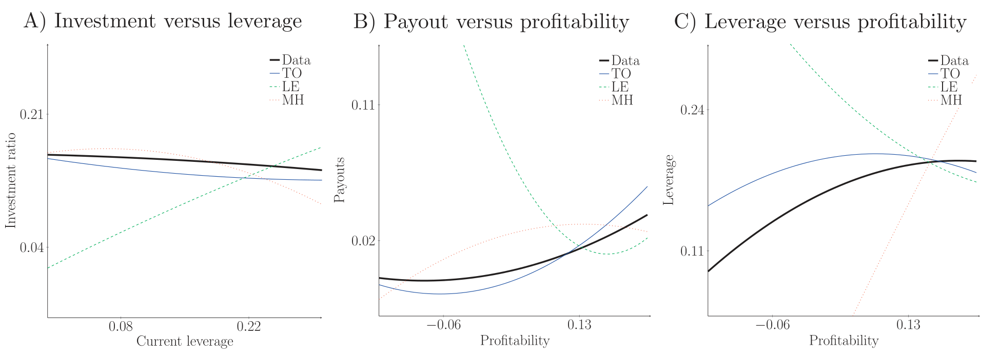
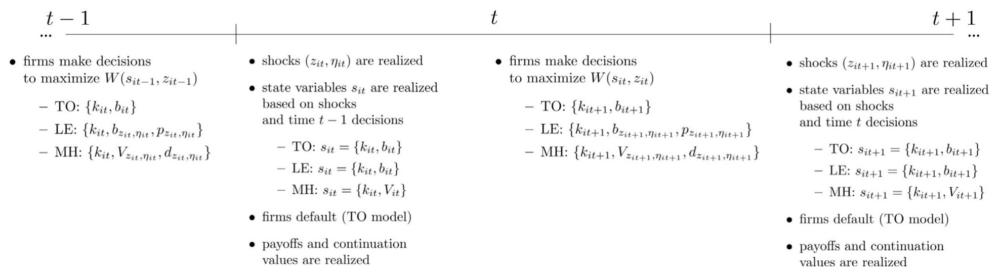
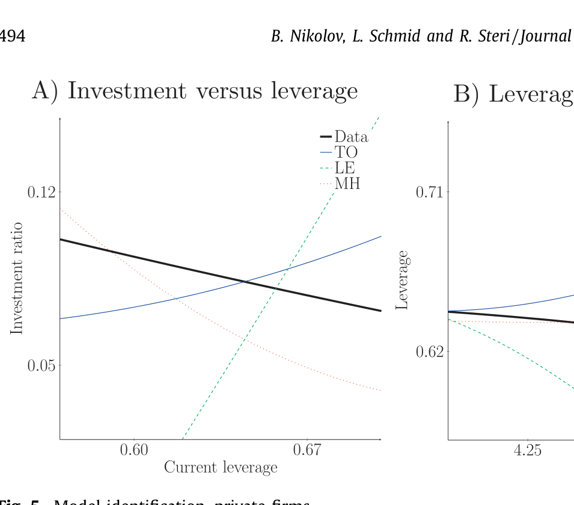
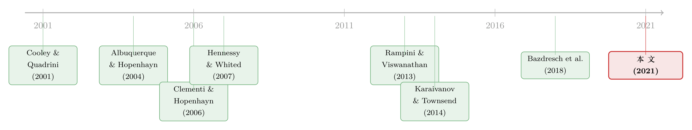

同样是「借不到钱」，原因却各不相同：把融资约束拆回它的三个源头
本文读的是 Nikolov, Schmid & Steri (2021, JFE)：作者把三类经典的动态企业融资模型——税收权衡 (trade-off)、有限承诺 (limited commitment)、道德风险 (moral hazard)——放进同一个环境里结构估计，再用「实证政策函数」做基准，逐一比拼谁更像真实企业的行为。结论出人意料地干净：大型上市公司像权衡模型，小型上市公司像有限承诺模型，而私人企业像道德风险模型。换句话说，「融资约束」不是一种病，而是三种病，长在不同的企业身上。
1 一个被反复念叨、却从没被「解剖」过的词
公司金融这门学问，几乎是围着「融资约束」这四个字转的。Modigliani 和 Miller 早就把话讲死了：只要没有任何摩擦阻碍企业拿到外部融资，公司的融资决策就和它的价值、它的实际经营毫无关系。可现实里，企业的杠杆、投资、分红，明明白白地相互纠缠。于是问题就来了——到底是什么摩擦，限制了企业拿钱？
这个问题，理论界给出的答案多得让人眼花。有人说，是税收：债务利息能抵税，企业为了省税才去借那些「将来可能还不上」的债，这是权衡模型 (trade-off model)。有人说，是承诺：企业根本没法保证自己会乖乖还债，债权人只好事先把能借的额度卡死，这是有限承诺模型 (limited commitment / enforcement)。还有人说，是信息：企业的真实现金流只有自己知道，老板完全可以「报少一点、私吞一点」，债权人为了防着这一手，把合约设计得处处设防，这是道德风险模型 (moral hazard)。
这三套故事，每一套都自洽、都优雅、都能写出一篇漂亮的理论文章。问题是——它们彼此矛盾吗？不一定。它们在数据里到底哪个对？没人系统地比过。 大家各说各话，各自拿一组样本、估一个模型、宣称「拟合得很好」，然后就收工了。
这篇文章想做的，恰恰是把这三套故事拉到同一张擂台上，问一句最朴素的话：给定一组真实企业的行为，这三个模型里，哪一个最像它？
2 真正关键的一步：用「政策函数」做裁判
要比模型，先得想清楚「比什么」。
传统的结构估计 (structural estimation) 通常去匹配一组矩 (moments)——比如杠杆的均值、投资的方差、分红的自相关。可矩是「压缩」过的信息，一旦压缩，模型之间的差异往往就被抹平了：两个机制截然不同的模型，完全可能产生几乎一样的杠杆均值。
作者在这里走了一条更聪明的路，借鉴了 Bazdresch, Kahn & Whited (2018) 提出的实证政策函数估计 (empirical policy function estimation)。想法是这样的：一个动态模型，最核心的预测,其实就是一组政策函数——它把企业当前的「状态 (states)」映射到企业接下来的「行为 (policies)」。说白了就是：一家规模多大、盈利多高、杠杆多重的公司，下一步会投资多少、借多少、分多少。
这一步是全文的「阿基米德支点」。矩匹配比的是几个数字，而政策函数比的是整条反应曲线的形状——投资对杠杆是正斜率还是负斜率？杠杆对盈利是涨还是跌？不同的摩擦，会在这些斜率的符号上留下完全不同的指纹。模型再怎么调参数，也很难同时把所有斜率的符号都伪装对。
具体地，作者把政策取为投资、杠杆、分红，把状态取为规模、盈利能力、杠杆，然后做一件事：从数据里估出一组「实证政策函数」作为基准 (benchmark)，再从每个模型的模拟数据里估出对应的政策函数，估计量就去挑那组模型参数，让模型政策函数与实证基准之间的距离最小。
这套做法的妙处在于，它对「错误设定 (misspecification)」有极强的甄别力——一个机制不对的模型，哪怕参数调到最优，它的政策函数也会和数据「拧着来」。

Figure 3: presents a subset of empirical benchmarks for
3 三套模型，一个共同的骨架
作者很克制：三个模型共用同一套技术设定，只让「摩擦」这一处不同，这样观测到的行为差异就只能归因于摩擦本身，而不是别的什么东西。
技术端是标准的新古典设定。税后经营利润为
$$\pi(k_{it}, z_{it}, \eta_{it}) = (1-\tau)\big((z_{it}+\eta_{it})k_{it}^{\alpha} - f\big)$$
其中 \(\tau\) 是公司税率，\(\alpha<1\) 给出规模报酬递减，\(f\) 是固定生产成本。\(z_{it}\) 是一个持续性冲击（作者实证里设成 AR(1)，持续度 \(\rho_z\)、条件波动率 \(\sigma_z\)），而 \(\eta_{it}\) 是一个 i.i.d. 冲击，以概率 \(\kappa\) 取 \(\eta\)、以概率 \(1-\kappa\) 取 \(-\eta\)。
这个 \(\eta_{it}\) 看似不起眼，却是整篇文章的「机关」——它只在道德风险模型里唱主角：因为它能以一种可处理的方式，把「非对称信息」塞进来。
资本按标准规则积累，并伴随凸调整成本：
$$k_{it+1} = k_{it}(1-\delta) + i_{it}, \qquad \Phi(k_{it+1}, k_{it}) \equiv \frac{1}{2}\psi\left(\frac{i_{it}}{k_{it}}\right)^2 k_{it}$$
\(\delta\) 是折旧率，\(\psi\) 控制调整成本的陡峭程度。时间线上，企业在期末就确定下期的融资与投资，期初投入、生产，期末再向出资人转移现金。

Figure 1: provides a graphical account of the timing of de-
所有融资约束的总根子，是有限责任 (limited liability)。 由于股东可以「一走了之」，企业在债务到期时是否「活着」，取决于一个清偿约束 (solvency constraint)：
$$(1-\tau)\pi(k_{it}, z_{it}, \eta_{it}) + (1-\delta)k_{it} + \tau\delta k_{it} - \big(1 + (r+\Delta_{it-1})(1-\tau)\big)b_{it-1} \geq 0$$
左边正是企业在冲击实现后的「净值」。一旦它为负，企业违约，债权人接管、按回收率 \(\xi\) 拿走剩余资产。债权人当然不傻，他们会预判违约状态，并把违约溢价 \(\Delta_{it}\) 加到无风险利率之上，让自己在期望意义上不亏：
$$E_{t-1}\!\left[(1+r+\Delta_{it-1})(1-I_{D,it}) + \xi\frac{(1-\delta)k_{it}}{b_{it-1}}I_{D,it}\right] = 1+r$$
这里 \(I_{D,it}\) 是违约的示性函数。这条「破产成本 + 税盾」的拉锯，就是权衡模型的全部张力所在。
而企业的分红（也就是它的可支配资源约束）写成：
$$d_{it} \equiv (1-\tau)\pi(k_{it},z_{it},\eta_{it}) - k_{it} + (1-\delta)k_{it} - \Phi(k_{it},k_{it-1}) + \tau\delta k_{it} - \big(1+(r+\Delta_{it-1})(1-\tau)\big)b_{it-1} + b_{it} \geq 0$$
注意这个 \(d_{it}\geq 0\)——由于有限责任，增发新股 (seasoned equity) 实际上被排除了（数据里的股权发行多半是员工行权，不在模型里）。正是「分红不能为负、又不能随便增发」这一条，把外部融资的大门关上了一道缝；三个模型的区别，只在于这道缝是被税收、被承诺、还是被信息卡住的。
有限承诺模型保留税盾，但允许用状态依存的、必须由可抵押资产担保的债务偿还表，来更灵活地实现债务结构；道德风险模型则让出资人观测不到冲击实现，于是合约必须设计成「逼着借款企业说真话」。三套故事，一副骨架。
为什么不把三种摩擦塞进一个大模型里一次性估完？因为它们的市场结构根本不兼容：权衡模型是外生不完全市场，有限承诺和道德风险是内生不完全市场，后者还带非对称信息。强行嵌套既在概念上别扭、在计算上也几乎不可行。作者因此选择先比「非嵌套 (non-nested)」的单一摩擦模型，再用贝叶斯模型平均去做组合。
4 识别：让斜率的符号自己说话
模型估出来之后，怎么判输赢？作者用了两件工具。
第一，做统计检验。借助 Rivers & Vuong (2002) 为非线性动态模型设计的模型选择检验，作者检验「两个模型在统计上无法区分」这个原假设，对立假设是「其中一个拟合得更好」。这类检验不需要把模型嵌套起来——这正是比较权衡、有限承诺、道德风险这种互不嵌套模型时最需要的性质。
第二，做贝叶斯模型平均 (Bayesian model averaging)。允许不同模型有不同权重，让数据来告诉你哪种组合最像。妙的是，一个候选模型拿到的相对权重，既可以读作「这种摩擦有多相关」，也可以读作「这种摩擦在该样本里的发生率有多高」。
而真正让人拍案的，是识别背后那几条「斜率符号」的直觉：
-
大型上市公司：实证里，投资基准对杠杆几乎没有反应，而杠杆对盈利能力正向反应。这正是权衡模型的画像——企业借债主要是为了「把利润从税里挡出来」，而不是为了给投资找钱。大公司的资本结构，说到底是围着盈利能力转的。
-
小型上市公司：杠杆对盈利能力负向反应，投资却对盈利能力正向反应。这恰好是有限承诺模型的故事——执行约束限制了企业的杠杆（进而限制投资与成长），而一笔意外的盈利冲击会降低企业对外部融资的依赖、释放成长空间。成长机会，是这类企业融资政策的主角。
-
私人企业：投资对杠杆负向反应——杠杆越高，投资越少。这只有道德风险模型讲得通：企业要想投资，就得让内部人的利益与出资人足够一致，办法是给他们「skin in the game」，也就是更多股权、更少杠杆，把私吞现金流的诱惑压到最低。

Figure 5: Model identification–private firms
5 反转：约束的「源头」会随企业类型而切换
把三个模型分别在 Compustat 的全样本、大公司、小公司，以及来自 Orbis 的美国私人企业样本上估一遍，结论清晰得近乎漂亮：
大型上市公司 → 权衡模型；小型上市公司 → 有限承诺模型；私人企业 → 道德风险模型。 而在整个 Compustat 全样本上，权衡模型胜出——这意味着，如果你只想给宏观模型找一个「一招鲜」的资本结构设定，权衡模型是个不错的起点。
更进一步，结构估计还给出了那些「看不见的代理摩擦」的量级，这才是这套方法真正值钱的地方：
- 在私人企业样本里，要让模型对得上观测到的企业行为，企业主必须有能力私吞每一美元利润里约 13 美分（13 cents on the dollar）。而且这些企业的总波动里，由不可观测冲击贡献的部分被估得相当高。
- 在小型上市公司样本里，有限承诺模型估出企业大约能抵押其60% 的资产。
最后，作者用反事实把「融资约束到底有多贵」也算了出来：把「被某种摩擦约束的企业估值」与两个极端比——(i) 完全无约束（可零成本增发股权）、(ii) 完全自给自足（金融自闭，所有开支只能靠内部资金）。结果是，融资约束的代价在各样本间介于 20% 到 30%。这不是一个小数目。
而且作者特意强调了一个常被忽略的警告：用一个拟合很差的模型去做估值，会错得离谱。 同一家企业，在「对」的模型和「错」的模型下，估出来的价值可能天差地别。这就把「先识别清楚约束的源头、再谈估值」从一句方法论口号，变成了一个有真金白银后果的实证结论。
（关于「代理冲突如何改写企业的现金与融资政策」，可参见《现金为什么一定要「还」出去？》与《债务这副药，为什么不能全吃？》；关于「承诺 vs. 相机抉择如何沿企业规模把信贷掰成两半」，则可对照《借得到，却用不上》。)
6 文献脉络
这条研究线，是从两支并行的河流汇成的。
一支是动态企业金融的结构估计。Cooley & Quadrini (2001) 把金融摩擦写进企业动态，Hennessy & Whited (2005, 2007) 用结构估计去量「外部融资到底有多贵」，奠定了「拿模型去对数据」的范式。
另一支是动态契约理论。有限承诺这一脉，从 Albuquerque & Hopenhayn (2004) 的最优借贷合约出发，到 Rampini & Viswanathan (2010, 2013) 把抵押与资本结构串起来；道德风险与现金流私吞这一脉，则有 Clementi & Hopenhayn (2006)、DeMarzo & Fishman (2007a,b)、Quadrini (2004)。

两支河流交汇的关键，是「如何在数据里区分不同的摩擦机制」。Karaivanov & Townsend (2014) 在泰国村庄的风险分担上做了这件事，区分了机制设计与外生不完全市场；Bazdresch, Kahn & Whited (2018) 则贡献了本文赖以为生的「实证政策函数估计」这件兵器。这篇文章，正是把「区分机制」这件事，第一次系统地搬进了动态公司金融的语境里——它站在两条脉络的交汇口上。
7 评论与延伸（Q&A + 研究方向）
(a) 几个可能的疑问
Q：为什么不直接看资产负债表，非要绕一圈去比政策函数？
因为静态的资产负债表（杠杆水平、现金水平）是「均衡结果」，三种摩擦完全可能产生同样的杠杆均值。政策函数比的是「反应的方向」——投资对杠杆是正还是负、杠杆对盈利是涨还是跌。这些斜率的符号，才是不同摩擦留下的、难以伪装的指纹。
Q：私人企业「像道德风险」，会不会只是因为它们小、不透明，而不是真有人在私吞？
作者自己很坦诚地做了软化：13 美分的「现金流私吞」不该窄读成「老板在偷钱」，而更应宽读成「在缺乏公众监督、信息不透明的企业里，关于资金该怎么用的利益冲突」。但这也确实是识别上的软肋——模型把所有「无法解释的、与不可观测冲击相关的行为」都归到了道德风险这一个筐里。
Q：有限承诺和道德风险都是「内生不完全市场」，凭什么能在数据里分开？
靠的是那个 i.i.d. 冲击 \(\eta\) 和不同的政策函数斜率。道德风险模型里，\(\eta\) 是私有信息，会逼出「投资对杠杆负向」的特征（skin in the game）；有限承诺里没有这层信息不对称，约束来自「能抵押多少」，呈现的是「杠杆对盈利负向、投资对盈利正向」。是行为模式而非单一变量把它们分开的。
Q：在全样本上权衡模型胜出，是不是说agency那一套被证伪了？
不是。恰恰相反，作者的核心信息是异质性：权衡模型只是「平均企业」的好描述，它在大公司身上对，在小公司和私人企业身上则明显输给了agency模型。所谓「全样本权衡胜出」，更多是 Compustat 被大公司主导的结果，而不是agency摩擦不重要。
Q：20%–30% 的「融资约束成本」，是相对什么算出来的？
是相对于一个反事实的「无约束」企业（可零成本增发股权）算的估值折损。它衡量的是「这种摩擦的存在让企业价值缩水了多少」，区间的上下端对应不同样本。要点不在于精确的数字，而在于：用错模型估出来的这个数会系统性地偏掉，所以「先认出源头」很重要。
Q：模型把增发新股几乎排除了，这会不会太苛刻？
作者的辩护是：数据里的股权发行，很大一部分其实是员工行权这类「被动」发行（引 McKoen 2015），而不是企业主动去市场融资。把这部分剔除后，「有限责任 ⇒ 分红不能为负、增发受限」是一个对多数企业（尤其私人企业）相当现实的刻画。但对那些确实频繁增发的成长型公司，这一假设可能偏紧。
(b) 几个可能的研究问题与提案
1. 把「融资约束源头」接到公司债定价上
【经济故事】如果约束的源头随企业类型切换，那么信用利差里「该补偿的风险」也应随之不同：道德风险主导的发行人，其利差里应含一块「私吞/治理」溢价；有限承诺主导的，则更多是「抵押品价值」溢价。把本文的样本切分逻辑搬到债券二级市场，能检验利差结构是否真按源头分层。 【可行性】中。需要 TRACE 利差数据 + 发行人规模/上市状态分组，识别上可借本文的政策函数思路，但把代理摩擦映射到利差需要额外的结构假设，doable 但不轻松。
2. 外资持有人会改变融资约束的「源头」吗？
【经济故事】外资机构持有往往带来更强的监督与信息生产。一个自然猜想是：外资进入后，原本「道德风险主导」的企业会向「权衡/有限承诺主导」迁移——因为信息不对称被压低了。这等于把本文的静态分类，变成一个可被「治理冲击」推动的动态迁移。 【可行性】中。需要带外资持股的面板（如 Orbis + 持股数据），识别上可找外资准入放开这类外生冲击做事件研究，检验政策函数斜率是否随外资进入而改变符号。
3. 在「流动性危机」里，哪种约束最先收紧？
【经济故事】三种摩擦对总体冲击的敏感度未必相同：抵押品约束（有限承诺）会随资产价格下跌而骤然收紧，而道德风险约束更依赖于现金流可验证性。把本文框架放到 2020 这类危机窗口，能看出「危机里到底是哪条约束在咬人」。 【可行性】高。结构已现成，只需在估计中加入总体状态；危机期的企业政策数据也可得。是本文最直接的延伸之一。
4. 把贝叶斯模型权重当成「时变的摩擦强度」
【经济故事】本文的模型权重是横截面的（哪个样本像哪个模型）。但摩擦强度本身可能随宏观周期波动——把权重做成时变的，就能描出「某种约束在经济中的发生率」如何随周期起落。 【可行性】中。需要滚动窗口或状态依存的模型平均，计算量大，但概念上是本文方法的自然推广。
5. 用「政策函数基准」去检验既有结构模型的稳健性
【经济故事】很多结构模型靠矩匹配「看起来拟合很好」，但本文证明政策函数有更强的甄别力。一个有价值的方向是：把文献里那些「拟合很好」的投资/融资模型，统统拿政策函数基准重新对账，看看哪些经得起这一关。 【可行性】高。方法现成、数据现成。（这与《一个「成功」的模型，为什么经不起逐年对账？》的精神一脉相承。）
8 我的判断与参考文献
贡献。 这篇文章最大的价值，不在于「估出了某个参数」，而在于它把一个被念叨了几十年、却从没被认真比过的问题——「融资约束的源头到底是什么」——变成了一个可以用统计检验回答的实证问题。它给出的答案（约束的源头随企业类型系统切换）既符合直觉，又足够具体到能指导后续研究：研究宏观的人可以放心用权衡模型当「平均企业」的近似，而研究小企业、私人企业的人则必须把agency摩擦摆到台面上。13 美分私吞、60% 抵押率、20%–30% 约束成本这几个数字，则给了文献一组难得的「量级锚点」。
对识别的担忧。 我最在意两点。其一，道德风险这一支的识别，几乎完全靠那个不可观测的 i.i.d. 冲击 \(\eta\) 撑着——模型里所有「无法用可观测状态解释的行为」都被归进了「私吞/信息不对称」这个筐，这使得 13 美分这个数字带有「残差」色彩，对模型设定相当敏感。其二，私人企业样本来自 Orbis，与 Compustat 的口径、选样、数据质量都不同，「私人企业更像道德风险」里有多少是真实机制、多少是数据异质性，值得更细致地拆。
接下来想看到什么。 我最想看到的，是把这套「源头识别」从静态横截面推到动态：摩擦的相对强度会不会随宏观周期、随治理冲击（比如外资进入）、随企业生命周期而迁移？如果能证明一家企业可以从「道德风险主导」走向「权衡主导」，那本文这张静态地图，就会升级成一部关于融资约束如何「演化」的动态史。
参考文献
- Albuquerque, R., & Hopenhayn, H. (2004). Optimal lending contracts and firm dynamics. Review of Economic Studies 71, 285–315.
- Bazdresch, S., Kahn, J., & Whited, T. (2018). Estimating and testing dynamic corporate finance models. Review of Financial Studies 31, 322–361.
- Bolton, P., Chen, H., & Wang, N. (2011). A unified theory of Tobin's q, corporate investment, financing, and risk management. Journal of Finance 66, 1545–1578.
- Clementi, G. L., & Hopenhayn, H. (2006). A theory of financing constraints and firm dynamics. Quarterly Journal of Economics 121, 229–265.
- Cooley, T., & Quadrini, V. (2001). Financial markets and firm dynamics. American Economic Review 91, 1286–1310.
- DeMarzo, P., & Fishman, M. (2007). Optimal long-term financial contracting. Review of Financial Studies 20, 2079–2128.
- Hennessy, C., & Whited, T. (2007). How costly is external financing? Evidence from a structural estimation. Journal of Finance 62, 1705–1745.
- Karaivanov, A., & Townsend, R. (2014). Dynamic financial constraints: Distinguishing mechanism design from exogenously incomplete regimes. Econometrica 82, 887–959.
- Nikolov, B., Schmid, L., & Steri, R. (2019). Dynamic corporate liquidity. Journal of Financial Economics 132, 76–102.
- Nikolov, B., Schmid, L., & Steri, R. (2021). The sources of financing constraints. Journal of Financial Economics 139(2), 478–501.
- Rampini, A., & Viswanathan, S. (2013). Collateral and capital structure. Journal of Financial Economics 109, 466–492.
- Rivers, D., & Vuong, Q. (2002). Model selection tests for nonlinear dynamic models. Econometrics Journal 5, 1–39.
- Vuong, Q. H. (1989). Likelihood ratio tests for model selection and non-nested hypotheses. Econometrica 57, 307–333.